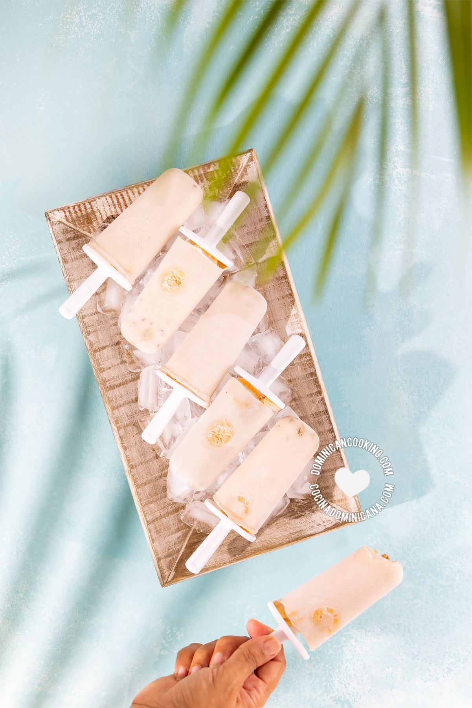

Helado de Habichuela con dulce

Descripcion
You know I am always the first to give credit where it's due: I did not come up with this idea first. Anyone
living
in the Dominican Republic knows that one formerly Dominican-owned ice cream brand has helado de habichuelas con
dulce available every Lenten season.
Ingredientes
- ¾ cup boiled red kidney beans, (or pinto, or cranberry beans), may be from a can, drained of liquid
- 1 cup coconut milk
- 1 cup evaporated milk
- ½ tablespoon cinnamon powder
- ¼ cup sultanas
- ½ cup sugar
- 12 milk cookies
steps
- In the blender vase, combine beans, coconut milk, evaporated milk, and cinnamon powder.
Blend until the beans are dissolved into the liquid. Strain it and discard solids.
- Pour into a medium saucepan and add the raisins. Heat over low heat until it just starts to break the
boil. Remove from the heat.
Place on the counter and cover with a clean tea towel and cool to room temperature.
Add sugar and stir. Taste and more sugar to taste if you find it necessary.
- Pour the liquid and raisins equally into the popsicle molds (how many will depend on the size of the
molds).
Divide the cookies equally into the molds.
Cover and place the stick. Freeze until they harden (3-4 hours)
- Remove from the freezer and the molds, and serve right away.